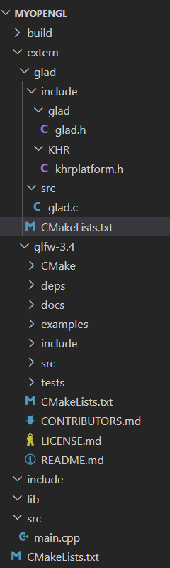

How to set up OpenGL environment in VSCode with CMake
Main steps
- Create an empty folder for our project. Inside our project folder, create empty folders according to the following structure.
1 | |
In addition, create a main.cpp inside src and use HelloWindow from https://learnopengl-cn.github.io/01 Getting started/03 Hello Window/. See Code below.
1 | |
-
GLFW
(1) Go to https://www.glfw.org/download.html to download Source Package of GLFW, which provides a straightforward API for creating windows, contexts, and surfaces, as well as handling input from keyboards, mice, and joysticks (not only for OpenGL but also for OpenGL ES, Vulkan, etc.). Here, we download the source package instead of pre-compiled binaries because building from source allows for customization and ensures compatibility with our specific development environment. Unzip the zipped folder downloaded. Move the unzipped folder toexternfolder.(2) Add the following contents in the CMakeLists.txt in the project folder.
1 | |
-
GLAD
GLAD (GL Loader-Generator) is an open-source, multi-language tool designed to manage OpenGL extensions and function pointers. It simplifies the process of loading OpenGL functions, which can vary across different graphics drivers and hardware. By generating a custom loader based on your specified OpenGL version and profile, GLAD ensures that your application can access the necessary OpenGL functions in a platform-agnostic manner.
(1) Go to https://glad.dav1d.de/
- Configure the options:
- Language: C/C++
- Specification: OpenGL
- API: Select the desired OpenGL version
- Profile: Core
- Generate a loader: Checked
- Click “Generate” and download the generated ZIP file.
- Unzip the file and move the unzipped folder to
externfolder.
(2) Add the following lines in the CMakeLists.txt in the project folder.
1
2add_subdirectory(extern/glad)
target_link_libraries(MyOpenGL glad)(3) Create a new CMakeLists.txt in
extern/glad/and add the following lines to it.1
2
3
4
5
6
7
8cmake_minimum_required(VERSION 3.10)
project(Glad)
# Create a new library target named glad.
add_library(glad include/glad/glad.h src/glad.c)
# Specify the include directories for the glad target. The PUBLIC keyword indicates that the include directory should be added to the include path for any target that links against glad. This means that any other part of your project or any other project that uses the glad library will be able to find the glad.h header file in the include directory.
target_include_directories(glad PUBLIC include/) - Configure the options:
-
The final CMakeLists.txt in the project folder is like:
1
2
3
4
5
6
7
8
9
10
11
12
13
14
15
16
17
18
19
20
21
22
23
24
25
26
27
28
29
30
31
32
33
34
35
36
37
38cmake_minimum_required(VERSION 3.10)
project(MyOpenGL)
# Set the C++ standard
set(CMAKE_CXX_STANDARD 11)
set(CMAKE_CXX_STANDARD_REQUIRED True)
# When including GLFW as part of your build, you probably don't want to build the GLFW tests, examples and documentation. To disable these, set the corresponding cache variables before adding the GLFW source tree.
set(GLFW_BUILD_DOCS OFF CACHE BOOL "" FORCE)
set(GLFW_BUILD_TESTS OFF CACHE BOOL "" FORCE)
set(GLFW_BUILD_EXAMPLES OFF CACHE BOOL "" FORCE)
# Add GLFW as a subdirectory. Add the root directory of the GLFW source tree to your project. This will add the glfw target to your project.
add_subdirectory(extern/glfw-3.4)
add_subdirectory(extern/glad)
# Include directories 把include文件夹添加到项目中
include_directories(include)
# Link directories
link_directories(${CMAKE_SOURCE_DIR}/lib)
# Add source files as SRC_LIST
aux_source_directory(./src SRC_LIST)
# Add executable
add_executable(MyOpenGL ${SRC_LIST})
# Once GLFW has been added, link your application against the glfw target. This adds the GLFW library and its link-time dependencies as it is currently configured, the include directory for the GLFW header and, when applicable, the GLFW_DLL macro.
target_link_libraries(MyOpenGL glfw)
# Note that the glfw target does not depend on OpenGL, as GLFW loads any OpenGL, OpenGL ES or Vulkan libraries it needs at runtime. If your application calls OpenGL directly, instead of using a modern extension loader library, use the OpenGL CMake package.
find_package(OpenGL REQUIRED)
# If OpenGL is found, the OpenGL::GL target is added to your project, containing library and include directory paths. Link against this like any other library.
target_link_libraries(MyOpenGL OpenGL::GL)
target_link_libraries(MyOpenGL glad)Refer the following figure for the project structure.
 -
Assume we are in the project folder. Then,
1
2
3
4
5cd build
cmake .. -G "MinGW Makefiles"
cd ..
cmake --build build
build/MyOpenGL.exe -
(Optional) Assimp
Assimp is a library that can help us read 3D models in different formats. More details can be found in LearnOpenGL tutorials. So how to integrate it to our project? First, I use ucrt64 (msys2) on Windows - which means that there’s no exact guidance in Assimp’s official repository about how to use assimp. I initially decided to compile it as a dynamic library, but it errors kept rising, especially during the linking process. And it seemed that vs instance was required. In fact, I tried to search the issues section in Assimp’s repository, and found that many other users had the same problem unsolved. Finally, I solved the issue by compiling it as a static library. BTW, if you don’t know how to use ucrt64 in the vscode terminal, just ask ChatGPT.
1 | |
After these command lines, check the install directory to confirm the files below exist.
1 | |
The next step is to create a assimp folder inside the project directory (e.g., inside a folder called extern) and copy the folders in assimp-install to the newly created folder. Then add a CMakeLists.txt inside the assimp folder and modify the CMakeLists.txt in the root folder of the project. Here, let’s see a CMakeLists as an example.
CMakeLists.txt in assimp
1 | |
CMakeLists.txt in project root directory
1 | |
If we can run the program successfully, done!
References
https://www.glfw.org/docs/3.3/build_guide.html#build_link_cmake_source (search for “With CMake and GLFW source”)
https://www.cnblogs.com/asmurmur/p/17720760.html